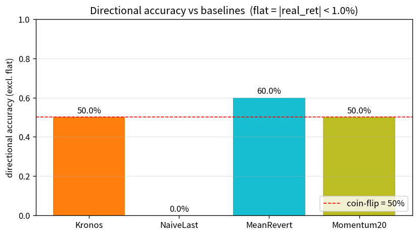
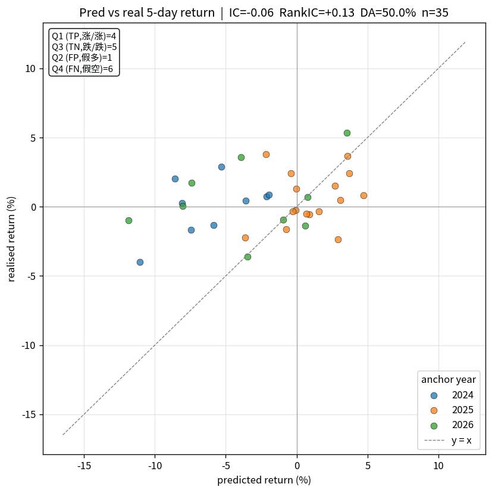
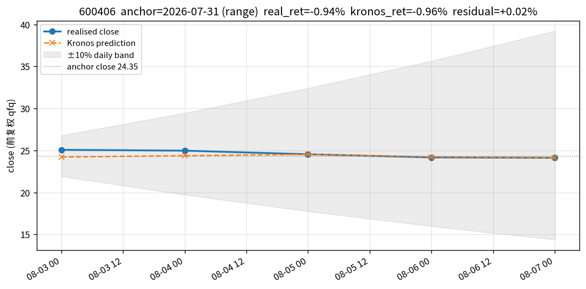
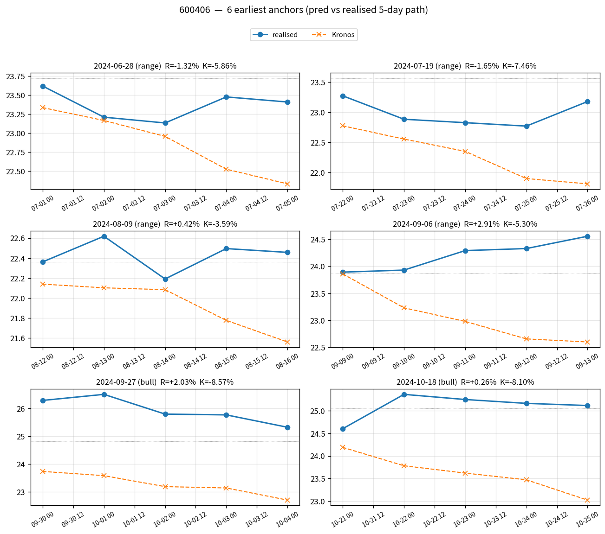
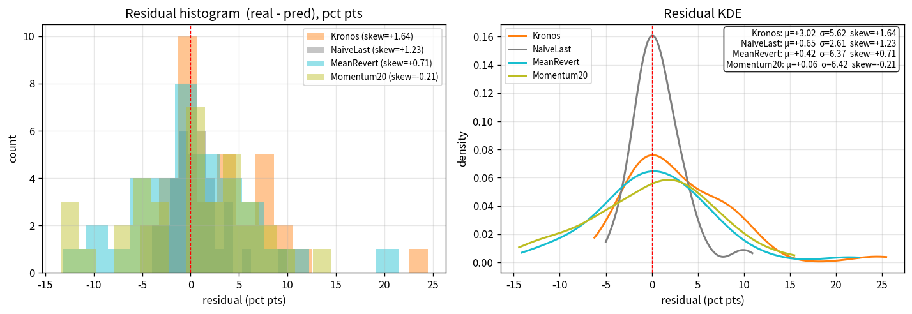
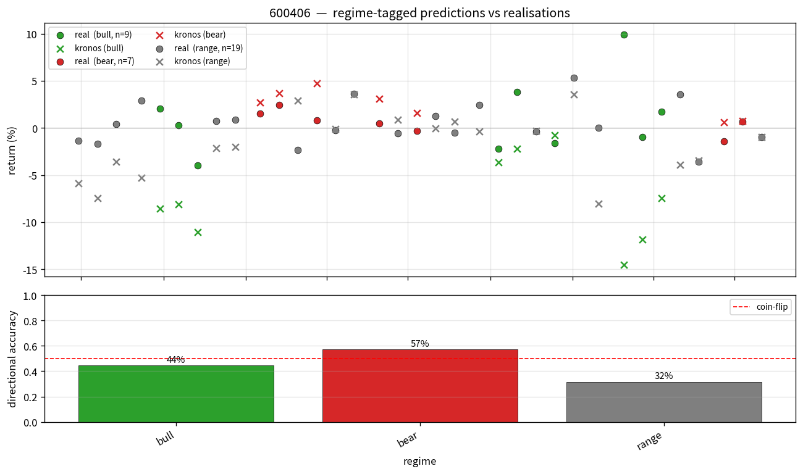
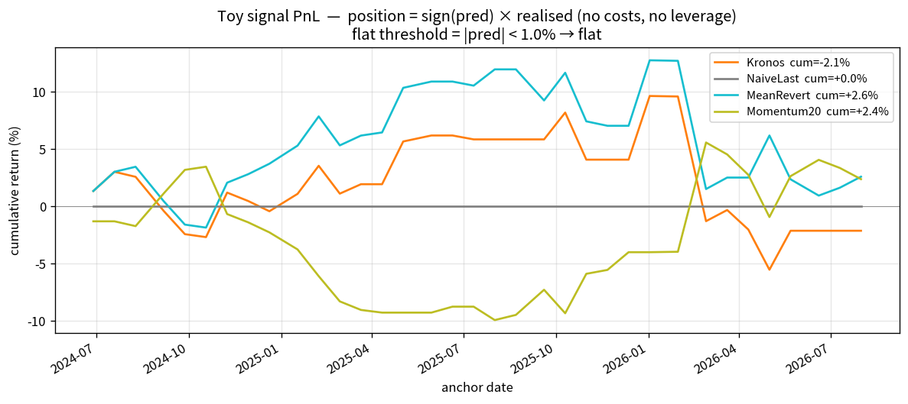

symbol: 600406
csv_dir: ./scripts/_smoke
start: 2023-06-01
end: 2026-08-07
lookback: 256
pred_len: 5
anchor_freq: W
max_anchors: 35
sample_count: 3
T: 1.0
top_p: 0.9
tokenizer: NeoQuasar/Kronos-Tokenizer-base
model: NeoQuasar/Kronos-base
device: cuda
max_context: 512
price_limit: 0.1
flat_threshold: 0.01
out_dir: ./outputs/vis
run_tag: 600406_guodian
| method | n | MAE% | RMSE% | DA(excl flat) | Hit@1% | IC | RankIC | up_cap | dn_cap | skew | pred_mean% | real_mean% | pred_std% | real_std% |
|---|---|---|---|---|---|---|---|---|---|---|---|---|---|---|
| Kronos | 35.000 | 4.283 | 6.376 | 0.500 | 0.200 | -0.058 | 0.131 | 0.583 | 0.435 | 1.645 | -2.368 | 0.652 | 4.824 | 2.608 |
| NaiveLast | 35.000 | 1.915 | 2.688 | 0.000 | 0.429 | — | — | — | — | 1.227 | 0.000 | 0.652 | 0.000 | 2.608 |
| MeanRevert | 35.000 | 4.654 | 6.381 | 0.600 | 0.171 | -0.098 | 0.120 | 0.684 | 0.562 | 0.712 | 0.230 | 0.652 | 5.559 | 2.608 |
| Momentum20 | 35.000 | 5.135 | 6.422 | 0.500 | 0.171 | 0.090 | -0.019 | 0.529 | 0.389 | -0.214 | 0.592 | 0.652 | 6.108 | 2.608 |
| Kronos_by_regime | — | — | — | — | — | — | — | — | — | — | — | — | — | — |






